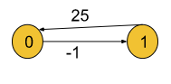
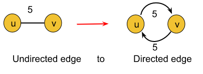
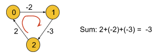

Problem Statement: The problem is to find the shortest distances between every pair of vertices in a given edge-weighted directed graph. The graph is represented as an adjacency matrix of size n*n. Matrix[i][j] denotes the weight of the edge from i to j. If Matrix[i][j]=-1, it means there is no edge from i to j.
Do it in place.
Example 1:
Input Format:
matrix[][] = { {0, 2, -1, -1},
{1, 0, 3, -1},{-1, -1, 0, -1},{3, 5, 4, 0} }
Result:
0 2 5 -1
1 0 3 -1
-1 -1 0 -1
3 5 4 0
Explanation: In this example, the final matrix
is storing the shortest distances. For example, matrix[i][j] is
storing the shortest distance from node i to j.
Example 2:
Input Format:
matrix[][] = {{0,25},
{-1,0}}
Result:
0 25
-1 0
Explanation: In this example, the shortest distance
is already given (if it exists).
Solution
Disclaimer: Don't jump directly to the solution, try it out yourself first. Problem link.
Solution:
In this article, we will be discussing Floyd Warshall Algorithm which is very much different from the two which we have previously learned: Dijkstra's Shortest Path algorithm and the Bellman-Ford algorithm.
Dijkstra's Shortest Path algorithm and Bellman-Ford algorithm are single-source shortest path algorithms where we are given a single source node and are asked to find out the shortest path to every other node from that given source. But in the Floyd Warshall algorithm, we need to figure out the shortest distance from each node to every other node.
Basically, the Floyd Warshall algorithm is a multi-source shortest path algorithm and it helpsto detect negative cycles as well. The shortest path between node u and v necessarily means the path(from u to v) for which the sum of the edge weights is minimum.
In Floyd Warshall's algorithm, we need to check every possible path going via each possible node. And after checking every possible path, we will figure out the shortest path(a kind of brute force approach to find the shortest path). Let’s understand it using the following illustration:
From the above example we can derive the following formula: matrix[i][j] =min(matrix[i][j], matrix[i ][k]+matrix[k][j]), where i = source node, j = destination node, and k = the node via which we are reaching from i to j.
Here we will calculate dist[i][j] for every possible node k (k = 0, 1….V, where V = no. of nodes), and will select the minimum value as our result.
In order to apply this algorithm to an undirected graph, we just need to convert the undirected edges into directed edges like the following:

Explanation: An undirected edge between nodes u and v necessarily means that there are two opposite-directed edges, one towards node u and the other towards node v. So the above conversion is valid.
Note:
Until now, to store a graph we have used the adjacency list. But in this algorithm, we are going to use the adjacency matrix method.
One additional point to remember is that the cost of reaching a node from itself must always be 0 i.e. dist[i][i] = 0, where i = current node.
Intuition:
The intuition is to check all possible paths between every possible pair of nodes and to choose the shortest one. Checking all possible paths means going via each and every possible node.
The follow-up questions for interviews:
How to detect a negative cycle using the Floyd Warshall algorithm?
Negative Cycle: A cycle is called a negative cycle if the sum of all its weights becomes negative. The following illustration is an example of a negative cycle:

We have previously said that the cost of reaching a node from itself must be 0. But in the above graph, if we try to reach node 0 from itself we can follow the path: 0->1->2->0. In this case, the cost to reach node 0 from itself becomes -3 which is less than 0. This is only possible if the graph contains a negative cycle.
So, if we find that the cost of reaching any node from itself is less than 0, we can conclude that the graph has a negative cycle.
What will happen if we will apply Dijkstra’s algorithm for this purpose?
If the graph has a negative cycle: We cannot apply Dijkstra’s algorithm to the graph which contains a negative cycle. It will give TLE error in that case.
If the graph does not contain a negative cycle: In this case, we will apply Dijkstra’s algorithm for every possible node to make it work like a multi-source shortest path algorithm like Floyd Warshall. The time complexity of Floyd Warshall is O(V3)(Which we will discuss later in this article) whereas if we apply Dijkstra’s algorithm for the same purpose the time complexity reduces to O(V*(E*logV)) (where v = no. of vertices).
Approach:
The algorithm is not much intuitive as the other ones’. It is more of a brute force, where all combinations of paths have been tried to get the shortest paths. Nothing to panic much with the intuition, it is a simple brute force approach on all paths. Focus on the three ‘for’ loops.
Formula:
matrix[i][j] =min(matrix[i][j], matrix[i ][k]+matrix[k][j]), where i = source node, j = destination node and k = the node via which we are reaching from i to j.
The algorithm steps are as follows:
Initial Configuration:
Adjacency Matrix: The adjacency matrix should store the edge weights for the given edges and the rest of the cells must be initialized with infinity().
After having set the adjacency matrix accordingly, we will run a loop from 0 to V-1(V = no. of vertices). In the kth iteration, this loop will help us to check the path via node k for every possible pair of nodes. Basically, this loop will change the value of k in the formula.
Inside the loop, there will be two nested loops for generating every possible pair of nodes(Nothing but to visit each cell of a 2D matrix using the nested loop). Among these two loops, the first loop will change the value of i and the second one will change the value of j in the formula.
Inside these nested loops, we will apply the above formula to calculate the shortest distance between the pair of nodes.
Finally, the adjacency matrix will store all the shortest paths. For example, matrix[i][j] will store the shortest path from node i to node j.
If we want to check for a negative cycle: After completing the steps(outside those three loops), we will run a loop and check if any cell having the row and column the same(i = j) contains a value less than 0.
Note: If you wish to see the dry run of the above approach, you can watch the video attached to this article. Code:
#include <bits/stdc++.h>
using namespace std;
class Solution {
public:
void shortest_distance(vector<vector<int>>&matrix) {
int n = matrix.size();
for (int i = 0; i < n; i++) {
for (int j = 0; j < n; j++) {
if (matrix[i][j] == -1) {
matrix[i][j] = 1e9;
}
if (i == j) matrix[i][j] = 0;
}
}
for (int k = 0; k < n; k++) {
for (int i = 0; i < n; i++) {
for (int j = 0; j < n; j++) {
matrix[i][j] = min(matrix[i][j],
matrix[i][k] + matrix[k][j]);
}
}
}
for (int i = 0; i < n; i++) {
for (int j = 0; j < n; j++) {
if (matrix[i][j] == 1e9) {
matrix[i][j] = -1;
}
}
}
}
};
int main() {
int V = 4;
vector<vector<int>> matrix(V, vector<int>(V, -1));
matrix[0][1] = 2;
matrix[1][0] = 1;
matrix[1][2] = 3;
matrix[3][0] = 3;
matrix[3][1] = 5;
matrix[3][2] = 4;
Solution obj;
obj.shortest_distance(matrix);
for (auto row : matrix) {
for (auto cell : row) {
cout << cell << " ";
}
cout << endl;
}
return 0;
}
Output:
0 2 5 -1 1 0 3 -1 -1 -1 0 -1 3 5 4 0
Time Complexity: O(V3), as we have three nested loops each running for V times, where V = no. of vertices.
Space Complexity: O(V2), where V = no. of vertices. This space complexity is due to storing the adjacency matrix of the given graph.
import java.util.*;
//User function template for JAVA
class Solution {
public void shortest_distance(int[][] matrix) {
int n = matrix.length;
for (int i = 0; i < n; i++) {
for (int j = 0; j < n; j++) {
if (matrix[i][j] == -1) {
matrix[i][j] = (int)(1e9);
}
if (i == j) matrix[i][j] = 0;
}
}
for (int k = 0; k < n; k++) {
for (int i = 0; i < n; i++) {
for (int j = 0; j < n; j++) {
matrix[i][j] = Math.min(matrix[i][j],
matrix[i][k] + matrix[k][j]);
}
}
}
for (int i = 0; i < n; i++) {
for (int j = 0; j < n; j++) {
if (matrix[i][j] == (int)(1e9)) {
matrix[i][j] = -1;
}
}
}
}
}
public class tUf {
public static void main(String[] args) {
int V = 4;
int[][] matrix = new int[V][V];
for (int i = 0; i < V; i++) {
for (int j = 0; j < V; j++) {
matrix[i][j] = -1;
}
}
matrix[0][1] = 2;
matrix[1][0] = 1;
matrix[1][2] = 3;
matrix[3][0] = 3;
matrix[3][1] = 5;
matrix[3][2] = 4;
Solution obj = new Solution();
obj.shortest_distance(matrix);
for (int i = 0; i < V; i++) {
for (int j = 0; j < V; j++) {
System.out.print(matrix[i][j] + " ");
}
System.out.println("");
}
}
}
Output:
0 2 5 -1 1 0 3 -1 -1 -1 0 -1 3 5 4 0
Time Complexity: O(V3), as we have three nested loops each running for V times, where V = no. of vertices.
Space Complexity: O(V2), where V = no. of vertices. This space complexity is due to storing the adjacency matrix of the given graph.
Special thanks to KRITIDIPTA GHOSH for contributing to this article on takeUforward. If you also wish to share your knowledge with the takeUforward fam, please check out this article. If you want to suggest any improvement/correction in this article please mail us at write4tuf@gmail.com